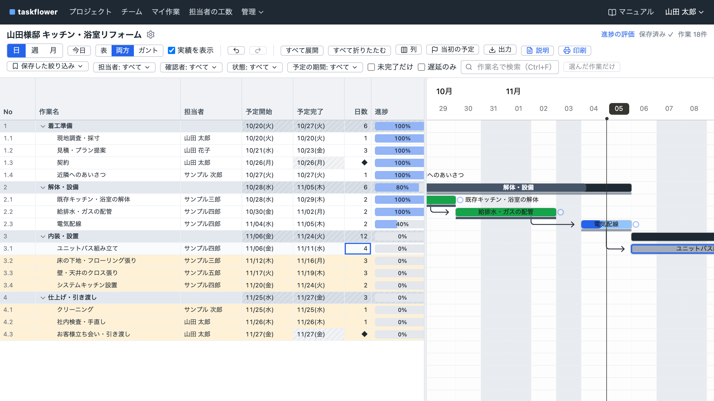
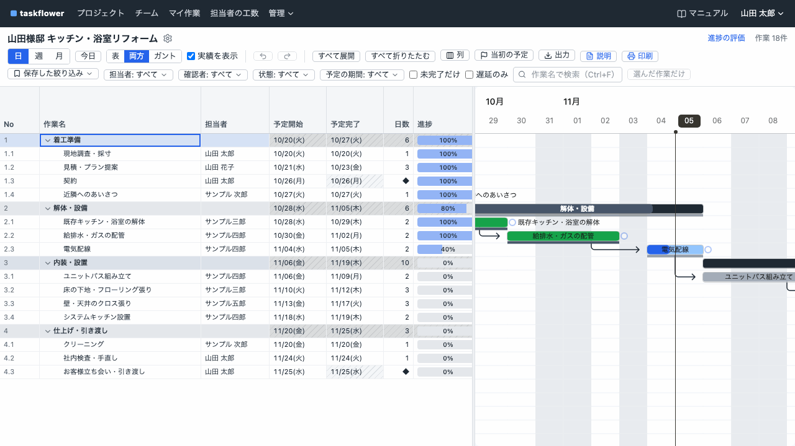

WBS（作業を階層に分けた一覧表）と、日程を横棒で表すガントチャートが横に並び、前の作業を延ばせば、後ろの工程は自動でずれます。社内サーバーで動いて、買い切り 3 万円（予定）。docker compose up -d で起動。インターネットから切り離した社内 LAN でも、すべての機能が動きます。

「ユニットバス組み立て」を 2 日延ばした直後。動く 6 件を確かめて「動かす」を押すと、まとめてずれ、変わった行が色付きになります。
工程表のツールを探すと、高いものは機能が多すぎて月額もかさみ、手頃なものは WBS とガントチャートが別の画面だったり、Web の入力画面で 1 件ずつ打つのが面倒だったりしました。Excel は打ちやすいけれど、1 つの作業が遅れるたびに後ろの日付を全部打ち直すことになります。現場や案件が変わるたびに、いつもの段取りを 1 から打つのも手間でした。
それがなかったので、作りました。高すぎず、足りなくもない、買い切りの工程表です。

日数を 2 → 4 に変えて Enter。動く 6 件と日付を確かめて、もう一度 Enter（動かす）で、まとめてずれます。Ctrl+Z で戻せます。
機能マニュアルを読む製品に同梱のマニュアルと同じ内容です。マニュアルにない機能は、taskflower にはありません。
| 構成 | Docker のコンテナ 1 つ。DB は SQLite（既定）・PostgreSQL・MySQL |
|---|---|
| 導入 | サーバーの CPU（amd64 / arm64）に合う Zip を展開 → docker load -i image.tar.gz → cp .env.example .env → docker compose up -d |
| 動作環境 | Linux / Windows（WSL2 + Docker Desktop）/ macOS。amd64・arm64。Docker Engine 24 以降・Docker Compose v2.24 以降 |
| 推奨の規模 | 同時に操作する人 30 人・ユーザー 500 人・1 つのプロジェクトの作業 3,000 件まで（CPU 2 コア・メモリ 2 GB で確認） |
| ブラウザ | Chrome・Edge・Firefox の最新版（PC は画面の幅 1280px 以上）。タブレットは参照と実績の入力 |
| ネットワーク | 外部への通信なし。画面の部品・フォント・マニュアルも同梱。日本の祝日は 2025〜2027 年を最初から登録 |
| 言語 | 日本語・English (US)・English (UK) から、システムで 1 つ選びます。日付の形も言語に合わせます |
| 認証 | ID とパスワード（argon2）。10 回失敗で 15 分ロック |
| データ・バックアップ | Docker ボリュームに保存。taskflower backup で動かしたままバックアップ |
| ライセンス | 同梱のオープンソースは MIT・Apache-2.0 など |
| 無料評価版 | 製品版 | |
|---|---|---|
| 作業の数 | 1 プロジェクト 30 件まで | 無制限 |
| プロジェクトの数 | 3 つまで | 無制限 |
| ユーザー・外部担当者 | 無制限 | 無制限 |
| REST API | × | ○ |
| GitLab 連携 | 1 プロジェクト・30 回まで | ○ |
無料評価版で入力したデータは、製品版のイメージに入れ替えるだけでそのまま使えます。
無料評価版は公開後にダウンロードできます（お知らせを受け取る）決済は米ドル換算。カードの請求額は為替で前後します。
法人・個人事業主の業務で使用するための製品です。
10 人で 3 年使っても 30,000 円。人数が増えても追加料金はありません。
不具合の修正版の提供: 購入日から 1 年間
ご購入の画面で、次の内容への同意をお願いしています。